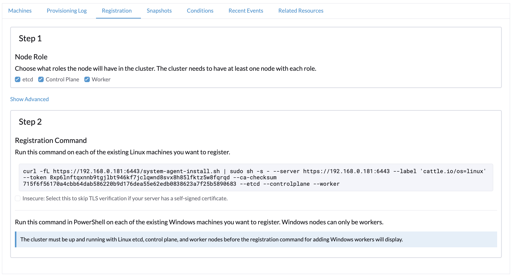
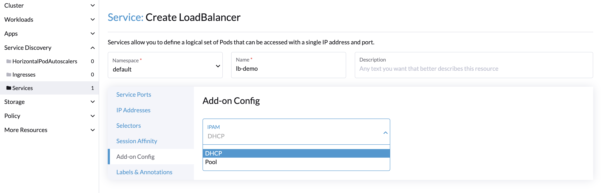

Provedor de Nuvem Harvester
Você pode provisionar RKE2 clusters no Rancher usando o Driver de Nó Harvester incorporado. O Harvester fornece suporte a balanceador de carga e armazenamento passthrough do cluster Harvester para o cluster Kubernetes convidado.
Aviso de Compatibilidade Retroativa
|
Por favor, note um problema conhecido de compatibilidade retroativa se você estiver usando a versão do provedor de nuvem Harvester v0.2.2 ou superior. Se sua versão do Harvester estiver abaixo de v1.2.0 e você pretende usar versões mais novas do RKE2 (ou seja, >= Para uma matriz de suporte detalhada, consulte a seção Harvester CCM & CSI Driver com Lançamentos RKE2 do site oficial. |
Implantando
Pré-requisitos
-
O cluster Kubernetes é construído sobre máquinas virtuais Harvester.
-
As máquinas virtuais Harvester que atuam como nós Kubernetes convidados estão no mesmo namespace.
-
Os nomes dos hosts das máquinas virtuais convidadas Harvester correspondem aos nomes das suas respectivas máquinas virtuais Harvester. As VMs Harvester do cluster convidado não podem ter nomes de host diferentes dos nomes das suas VMs Harvester ao usar o driver CSI do Harvester. Esperamos remover essa limitação em uma futura versão do Harvester.
|
Cada VM Harvester deve ter o módulo do kernel Para verificar se o módulo do kernel está disponível, acesse a VM e execute os seguintes comandos: O módulo do kernel provavelmente está ausente se ocorrerem as seguintes situações:
Por padrão, o módulo do kernel Para eliminar a necessidade de intervenção manual após o provisionamento do cluster convidado, crie suas próprias imagens de nuvem usando o openSUSE Build Service (OBS). Você deve remover o pacote |
Implantando no Cluster RKE2 com o Driver de Nó Harvester
Ao criar um cluster RKE2 usando o driver de nó Harvester, selecione o provedor de nuvem Harvester. O driver de nó ajudará a implantar automaticamente tanto o driver CSI quanto o CCM.

A partir da versão v2.9.0 do Rancher, você pode configurar uma pasta específica para os dados de configuração da nuvem usando o campo Caminho de configuração do diretório de dados.

Implantando Manualmente no Cluster RKE2
-
Gere dados de configuração da nuvem usando o script
generate_addon.sh, e depois coloque os dados em cada nó personalizado (diretório:/etc/kubernetes/cloud-config).curl -sfL https://raw.githubusercontent.com/harvester/cloud-provider-harvester/master/deploy/generate_addon.sh | bash -s <serviceaccount name> <namespace>O script depende de
kubectlejqao operar o cluster Harvester, e funciona apenas quando tem acesso ao arquivo kubeconfigHarvester Cluster.Você pode encontrar o arquivo
kubeconfigem um dos nós de gerenciamento do Harvester no caminho/etc/rancher/rke2/rke2.yaml. O IP do servidor deve ser substituído pelo endereço VIP.Exemplo de conteúdo:
apiVersion: v1 clusters: - cluster: certificate-authority-data: <redacted> server: https://127.0.0.1:6443 name: default # ...Você deve especificar o namespace no qual o cluster convidado será criado.
Exemplo de saída:
########## cloud config ############ apiVersion: v1 clusters: - cluster: certificate-authority-data: <CACERT> server: https://HARVESTER-ENDPOINT/k8s/clusters/local name: local contexts: - context: cluster: local namespace: default user: harvester-cloud-provider-default-local name: harvester-cloud-provider-default-local current-context: harvester-cloud-provider-default-local kind: Config preferences: {} users: - name: harvester-cloud-provider-default-local user: token: <TOKEN> ########## cloud-init user data ############ write_files: - encoding: b64 content: <CONTENT> owner: root:root path: /etc/kubernetes/cloud-config permissions: '0644' -
Na página de criação do cluster RKE2, vá para a tela Configuração do Cluster e defina o valor de Provedor de Nuvem como Externo.

-
Copie e cole o conteúdo
cloud-init user dataem Pools de Máquinas > Mostrar Avançado > Dados do Usuário.
-
Adicione o CRD
HelmChartparaharvester-cloud-providerem Configuração do Cluster > Configuração de Complemento > Manifesto Adicional.Você deve substituir
<cluster-name>pelo nome do seu cluster.apiVersion: helm.cattle.io/v1 kind: HelmChart metadata: name: harvester-cloud-provider namespace: kube-system spec: targetNamespace: kube-system bootstrap: true repo: https://raw.githubusercontent.com/rancher/charts/dev-v2.9 chart: harvester-cloud-provider version: 104.0.2+up0.2.6 helmVersion: v3 valuesContent: |- global: cattle: clusterName: <cluster-name>
-
Para criar o balanceador de carga, adicione a anotação
cloudprovider.harvesterhci.io/ipam: <dhcp|pool>.
Implantando no cluster personalizado RKE2 (experimental)

-
Gere dados de configuração da nuvem usando o script
generate_addon.sh, e depois coloque os dados em cada nó personalizado (diretório:/etc/kubernetes/cloud-config).curl -sfL https://raw.githubusercontent.com/harvester/cloud-provider-harvester/master/deploy/generate_addon.sh | bash -s <serviceaccount name> <namespace>O script depende de
kubectlejqao operar o cluster Harvester, e funciona apenas quando tem acesso ao arquivo kubeconfigHarvester Cluster.Você pode encontrar o arquivo
kubeconfigem um dos nós de gerenciamento do Harvester no caminho/etc/rancher/rke2/rke2.yaml. O IP do servidor deve ser substituído pelo endereço VIP.Exemplo de conteúdo:
apiVersion: v1 clusters: - cluster: certificate-authority-data: <redacted> server: https://127.0.0.1:6443 name: default # ...Você deve especificar o namespace no qual o cluster convidado será criado.
Exemplo de saída:
########## cloud config ############ apiVersion: v1 clusters: - cluster: certificate-authority-data: <CACERT> server: https://HARVESTER-ENDPOINT/k8s/clusters/local name: local contexts: - context: cluster: local namespace: default user: harvester-cloud-provider-default-local name: harvester-cloud-provider-default-local current-context: harvester-cloud-provider-default-local kind: Config preferences: {} users: - name: harvester-cloud-provider-default-local user: token: <TOKEN> ########## cloud-init user data ############ write_files: - encoding: b64 content: <CONTENT> owner: root:root path: /etc/kubernetes/cloud-config permissions: '0644' -
Crie uma VM no cluster Harvester com as seguintes configurações:
-
Configurações Básicas aba: Os requisitos mínimos são 2 CPUs e 4 GiB de RAM. O espaço em disco necessário depende da imagem da VM.

-
Redes aba: Especifique um nome de rede no formato
nic-<number>.
-
Opções Avançadas aba: Copie e cole o conteúdo da tela Dados do Usuário de Configuração da Nuvem.

-
-
Na aba Básico da tela Configuração do Cluster, selecione Harvester como o Provedor de Nuvem e, em seguida, selecione Criar para criar o cluster.

-
Na aba Registro, execute os passos necessários para rodar o comando de registro RKE2 na VM.

Implantando no cluster K3s com o driver de nó Harvester (experimental)
Ao iniciar um cluster K3s usando o driver de nó Harvester, você pode realizar os seguintes passos para implantar o provedor de nuvem Harvester:
-
Use
generate_addon.shpara gerar a configuração da nuvem.curl -sfL https://raw.githubusercontent.com/harvester/cloud-provider-harvester/master/deploy/generate_addon.sh | bash -s <serviceaccount name> <namespace>
A saída será semelhante ao seguinte:
########## cloud config ############ apiVersion: v1 clusters: - cluster: certificate-authority-data: <CACERT> server: https://HARVESTER-ENDPOINT/k8s/clusters/local name: local contexts: - context: cluster: local namespace: default user: harvester-cloud-provider-default-local name: harvester-cloud-provider-default-local current-context: harvester-cloud-provider-default-local kind: Config preferences: {} users: - name: harvester-cloud-provider-default-local user: token: <TOKEN> ########## cloud-init user data ############ write_files: - encoding: b64 content: <CONTENT> owner: root:root path: /etc/kubernetes/cloud-config permissions: '0644' -
Copie e cole o conteúdo de
cloud-init user dataem Pools de Máquinas > Mostrar Avançado > Dados do Usuário. -
Adicione o seguinte
HelmChartyaml deharvester-cloud-providera Configuração do Cluster > Configuração de Complementos > Manifesto Adicional.apiVersion: helm.cattle.io/v1 kind: HelmChart metadata: name: harvester-cloud-provider namespace: kube-system spec: targetNamespace: kube-system bootstrap: true repo: https://charts.harvesterhci.io/ chart: harvester-cloud-provider version: 0.2.2 helmVersion: v3
-
Desative o provedor de nuvem
in-treedas seguintes maneiras:-
Clique no botão
Edit as YAML.
-
Desative
servicelbe definadisable-cloud-controller: truepara desativar o controlador de nuvem padrão do K3s.machineGlobalConfig: disable: - servicelb disable-cloud-controller: true -
Adicione
cloud-provider=externalpara usar o provedor de nuvem Harvester.machineSelectorConfig: - config: kubelet-arg: - cloud-provider=external protect-kernel-defaults: false

-
Com essas configurações, um cluster K3s deve ser provisionado com sucesso ao usar o provedor de nuvem externo.
Fazer upgrade do Provedor de Nuvem
Fazer upgrade do RKE2
O provedor de nuvem pode ser atualizado ao fazer upgrade da versão do RKE2. Você pode fazer upgrade do cluster RKE2 via a interface do Rancher da seguinte forma:
-
Clique em ☰ > Gerenciamento de Cluster.
-
Encontre o cluster convidado que você deseja atualizar e selecione ⋮ > Editar Configuração.
-
Selecione Versão do Kubernetes.
-
Clique em Salvar.
Fazer upgrade do K3s
Fazer upgrade do provedor de nuvem K3s via a interface do Rancher, da seguinte forma:
-
Clique em ☰ > Cluster K3s > Aplicativos > Aplicativos Instalados.
-
Encontre o gráfico do provedor de nuvem e selecione ⋮ > Editar/Fazer upgrade.
-
Selecione Versão.
-
Clique em Próximo > Fazer upgrade.
|
O processo de fazer upgrade para um cluster convidado de nó único pode travar quando o novo pod Para mais informações, veja este comentário de problema no GitHub. Para resolver o problema, exclua manualmente o antigo pod |
Suporte a Balanceador de Carga
Uma vez que você tenha implantado o provedor de nuvem Harvester, pode aproveitar o serviço Kubernetes LoadBalancer para expor um microsserviço dentro do cluster convidado para o mundo externo. Criar um serviço Kubernetes LoadBalancer atribui um balanceador de carga Harvester dedicado ao serviço, e você pode fazer ajustes através do Add-on Config na interface do Rancher.

IPAM
O balanceador de carga incorporado do Harvester oferece modos DHCP e Pool, e você pode configurá-lo adicionando a anotação cloudprovider.harvesterhci.io/ipam: $mode ao seu serviço correspondente. A partir do provedor de nuvem Harvester >= v0.2.0, ele também introduz um modo único Compartilhar IP. Um serviço compartilha seu IP de balanceador de carga com outros serviços neste modo.
-
DHCP: Um servidor DHCP é necessário. O balanceador de carga Harvester solicitará um endereço IP ao servidor DHCP.
-
Pool: Você deve primeiro criar um pool de IP usando a SUSE Virtualization interface ou a Rancher interface (veja Melhores práticas para informações sobre as diferenças entre os dois métodos). O controlador de balanceador de carga SUSE Virtualization alocará um IP para o serviço de balanceador de carga seguindo a política de seleção de pool de IP.
-
Compartilhar IP: Ao criar um novo serviço de balanceador de carga, você pode reutilizar um IP de serviço de balanceador de carga existente. O novo serviço é referido como um serviço secundário, enquanto o serviço atualmente escolhido é o primário. Para especificar o serviço primário no serviço secundário, você pode adicionar a anotação
cloudprovider.harvesterhci.io/primary-service: $primary-service-name. No entanto, existem duas limitações conhecidas:-
Serviços que compartilham o mesmo endereço IP não podem usar a mesma porta.
-
Serviços secundários não podem compartilhar seu IP com serviços adicionais.
-
|
Modificar o modo |
Verificações de saúde
A partir da versão v0.2.0 do provedor de nuvem Harvester, verificações de saúde adicionais do serviço LoadBalancer dentro do cluster Kubernetes convidado não são mais necessárias. Em vez disso, você pode configurar sondas de liveness e de readiness para suas cargas de trabalho. Consequentemente, quaisquer pods indisponíveis serão removidos automaticamente dos pontos de extremidade do balanceador de carga para alcançar o mesmo resultado desejado.